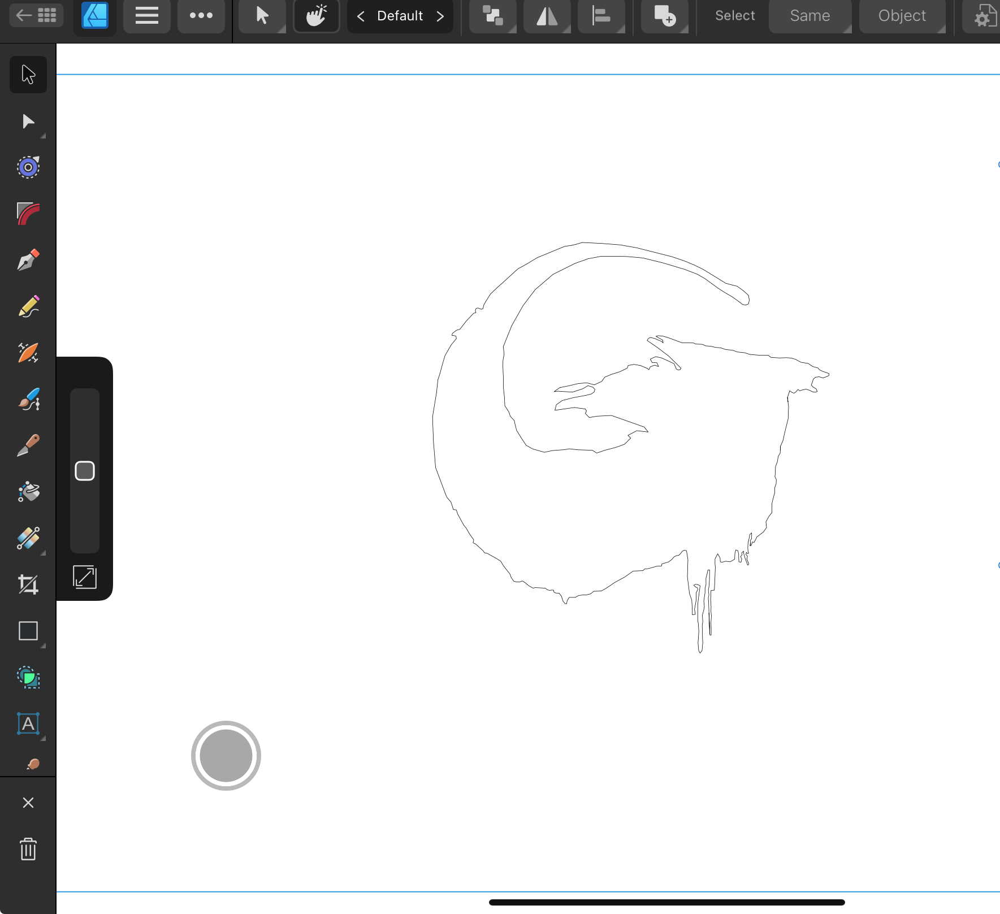
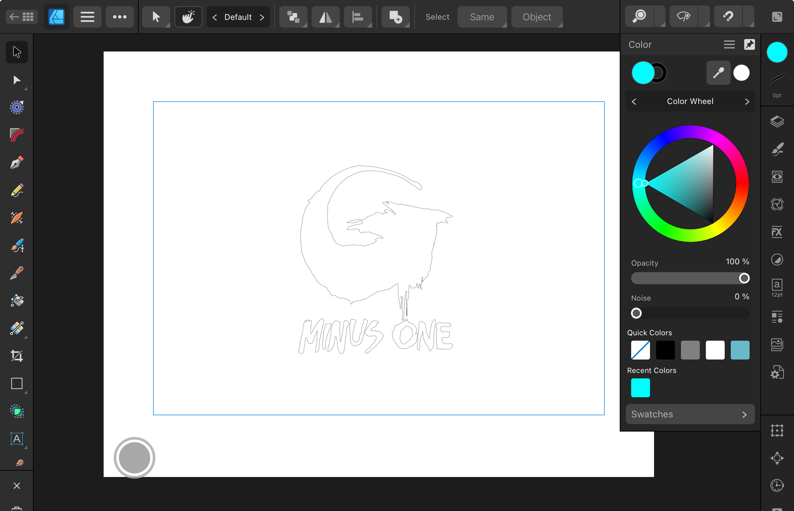
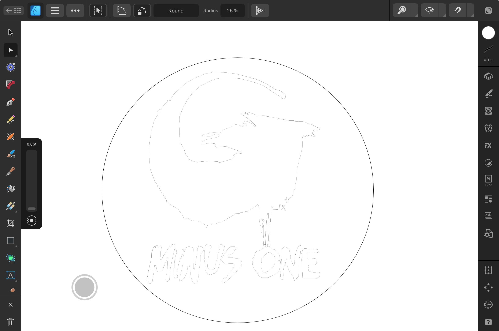
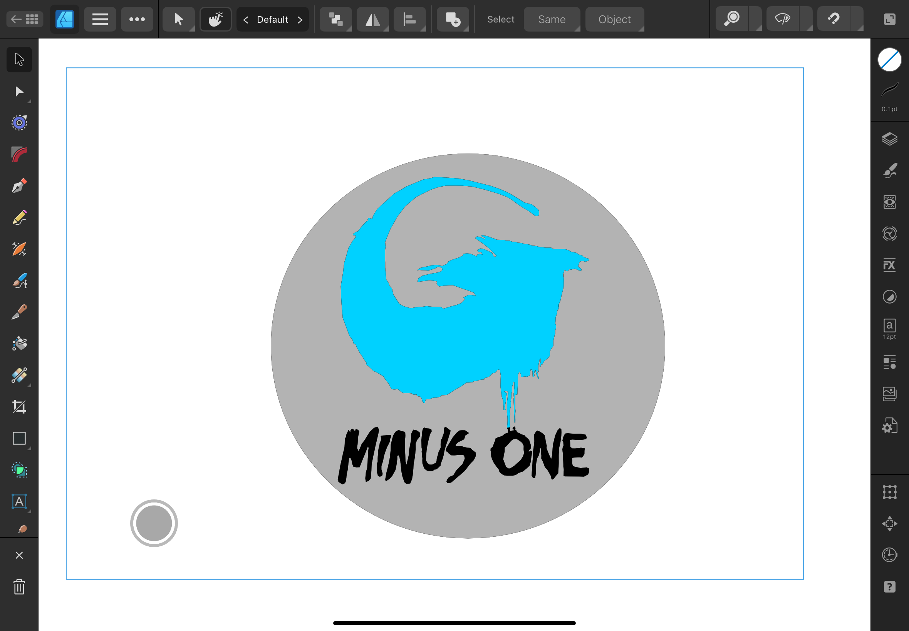
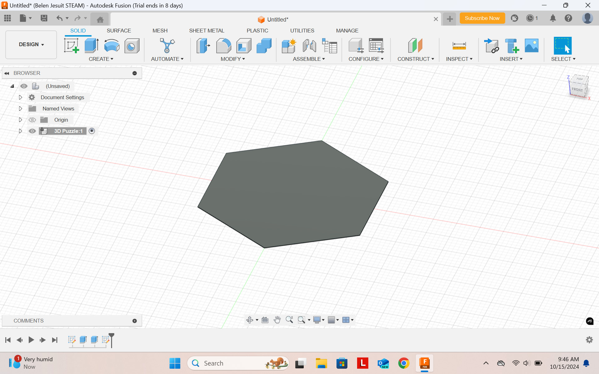
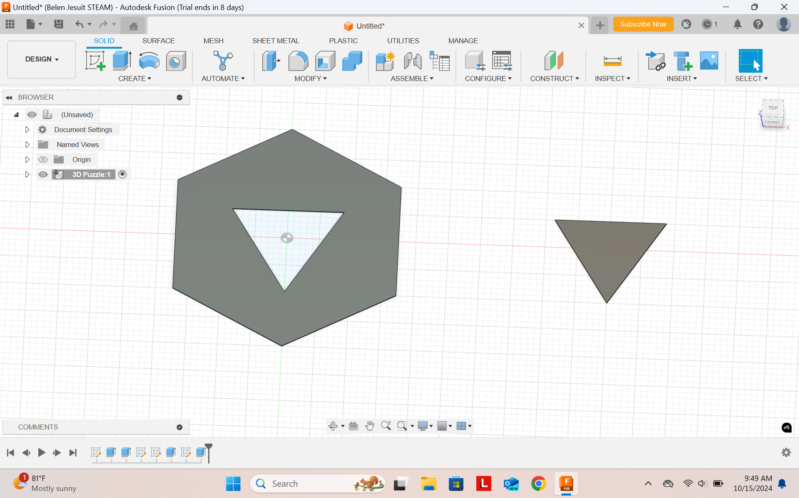
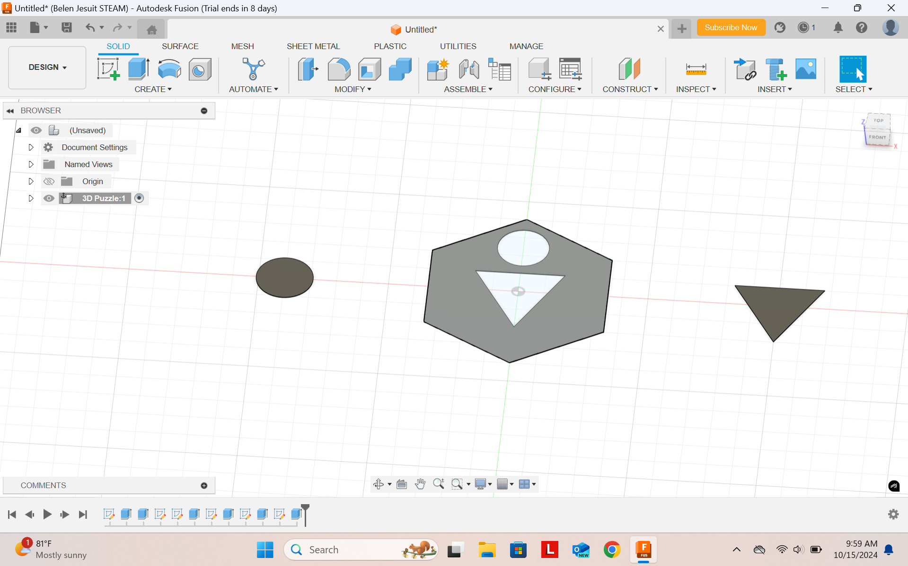
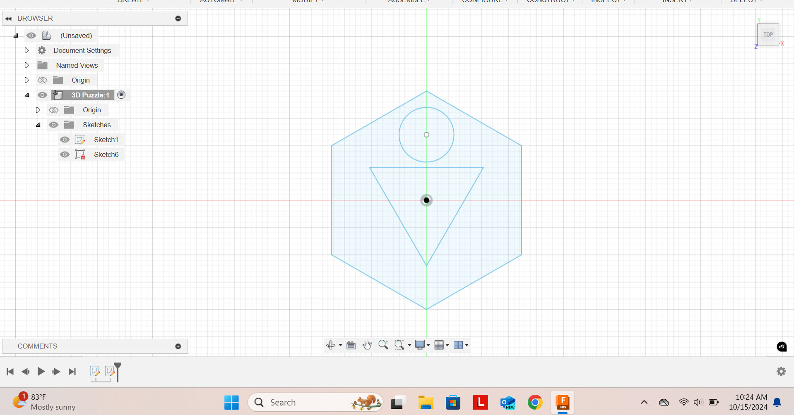

2D Sticker Design Process
For this section of the project I was tasked with making a 2D image that could be cut with something such as a vinyl cutter. This lead me to use the program affinity designer 2 as it allowed for a very easy to use platform and allowed me to workshop multiple designs. This program also had many features that allowed someone who is not a very good artist such as myself to make a very smooth design.
I had decided to make my sticker based on one of my most recent favorite movies which was Godzilla: minus zero. For this sticker I pulled the main promotional logo for the movie but simplified it down by removing aspects such as godzilla being visible inside the artist rendition of it. This was mainly for the sake of saving time but also the fact that this is something most likely out of my skill set as a whole.
In this update you can see the fact that I added the letters to the sticker which are also present in the promotional art. The main reason I decided to add these letters is beacause I like how it looks but it also allowed me to challenge myself by making the letters accomponied by the drawing in a way that looks smooth. As shown above I think it came out pretty well and it also allows people to have an idea of what the sticker is about even if they havent watched the movie.
Very simple update I needed to add a circle around my design so it would actually work as a sticker rather than being a stand alone design.
Here is the final update to my sticker with it fully colored. I picked these colors to not only be faithful to the colors godzilla uses but also to seprate which components to cut from the sticker. This side project was a fun test of my creativity, as of right now I have yet to cut the physical sticker.
3D Laser Cut Process
For the 3D component of this side project I decided to use Fusion to create my sketches. I went for a fairly simple concept for this portion of the mini project as I decided to do the signs you would commonly find in some disney movies or animated movies in general having a sign of a human as a triangle body with a round head. These types of movies were a big part of my childhood so I thought it would be fun to recreate this for my 3D puzzle component. As you can see above I began by making a simple hexagon for the base of my sign which I will be adding on to for this portion of the assignment.
In this update I made a triangle around the middle area of the hexagon for the "body" of the human sign I am making. Next to the hexagon you can see the piece of the triangle I made which was unintentional as I misinterpreted the directions and eneded up thinking that I had to make this as a 3D model instead of a sketch which you will see me fix at the final step.
This is the final component of the sign which was the circle representing the head of the person which I placed slightly above the triangle so it did not look like the person was lacking a neck. Here is where I realized my mistake and had to turn the 3D model back into a sketch to fix it.
This is what you saw above in sketch form which I will transport as a pdf to affinity designer 2 to allow me to cut it later.